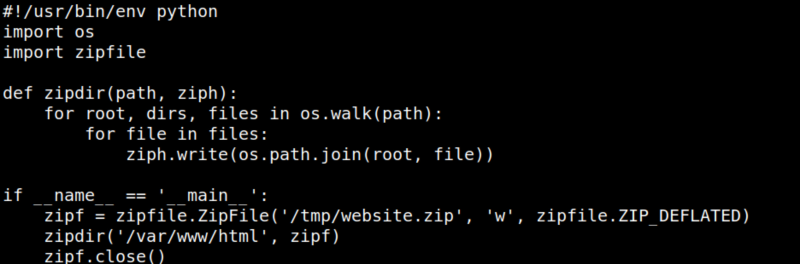
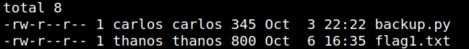

4. Privilege Escalation
As you can see in the previous step there's a file called “backup.py” in “thanos” directory.
$ cat backup.py
Output:

This file creates a backup of “/var/www” directory and then saves it in the “/tmp” directory.
Let's see who can run this file.
$ ls -l
Output:

As you can see only carlos can run this file.